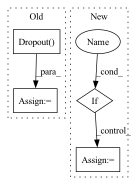

Pattern ID :15933
Before Change
self.master_node = args.master_node
self.master_dim = args.master_dim
self.dropout_layer = nn.Dropout(p=self.dropout)
self.W_i = nn.Linear(get_atom_fdim(args) + get_bond_fdim(args), args.hidden_size, bias=False)
if self.message_attention:
self.num_heads = args.message_attention_heads
self.W_h = nn.Linear(self.num_heads*args.hidden_size, args.hidden_size, bias=False)After Change
// Readout
self.W_o = nn.Linear(get_atom_fdim(args) + args.hidden_size, args.hidden_size)
if self.deepset :
self.W_s2s_a = nn.Linear(args.hidden_size, args.hidden_size, bias=self.bias)
self.W_s2s_b = nn.Linear(args.hidden_size, args.hidden_size, bias=self.bias)
if self.attention:In pattern: SUPERPATTERN
Frequency: 3
Non-data size: 4
Instances Fragment ID: 53697011
Project Name: aamini/chemprop
Commit Name: ddcdae2edb70f359d1d98863532cfe51709b1391
Time: 2018-09-30
Author: swansonk.14@gmail.com
File Name: mpn.py
M Class Name: MPN
N Class Name: MPN
M Method Name: __init__(2)
N Method Name: __init__(2)
M Parent Class: nn.Module
N Parent Class: nn.Module
M File Name: mpn.py
N File Name: mpn.py
M Start Line: 275
M End Line: 301
N Start Line: 272
N End Line: 313
Before Change
self.to_k = nn.Linear(dim, qk_dim, bias=False)
self.to_v = nn.Linear(dim, v_dim, bias=False)
self.dropout = nn.Dropout( dropout)
self.attn_fn = F.softmax
self.to_out = nn.Linear(v_dim, dim)
@typecheckedAfter Change
qk_dim = v_dim = dim_head * heads
if use_previous_attention:
// If we use the attention pattern from the last attention layer, we don"t need queries and keys
self.to_v = nn.Linear(dim, v_dim, bias=False)
else:
// Standard attention layer that will calculate the attention pattern from queries and keys Fragment ID: 53696998
Project Name: antofuller/configaformers
Commit Name: f2fa8c59ce1537b400a3288f9c556e84ca993807
Time: 2021-09-04
Author: afuller187187@gmail.com
File Name: building_blocks.py
M Class Name: Attention
N Class Name: Attention
M Method Name: __init__(4)
N Method Name: __init__(6)
M Parent Class: nn.Module
N Parent Class: nn.Module
M File Name: building_blocks.py
N File Name: building_blocks.py
M Start Line: 124
M End Line: 149
N Start Line: 301
N End Line: 313
Before Change
nn.Conv2d(3, 64, kernel_size=(3, 3), stride=(1, 1), padding=(1, 1)),
*self.model.features[1:]
)
self.model.classifier = nn.Sequential(
nn.Linear(4608, 4096, bias=True),
nn.ReLU(inplace=True),
nn.Dropout() ,
nn.Linear(4096, 4096, bias=True),
nn.ReLU(inplace=True),
nn.Dropout(),After Change
)
// remove final layers if we only need to extract features
if self.config.extract_feature_only :
self.model.classifier = self.model.classifier[:-3]
def forward(self, x):
return self.model.forward(x) Fragment ID: 53697017
Project Name: biasvariancelabs/aitlas
Commit Name: 3c4c781681550868173efe6230071ba63a1b65d2
Time: 2020-12-30
Author: ivan.kitanovski@gmail.com
File Name: aitlas/models/vgg16.py
M Class Name: VGG16MultiLabel
N Class Name: VGG16MultiLabel
M Method Name: __init__(2)
N Method Name: __init__(2)
M Parent Class: BaseMultilabelClassifier
N Parent Class: BaseMultilabelClassifier
M File Name: aitlas/models/vgg16.py
N File Name: aitlas/models/vgg16.py
M Start Line: 26
M End Line: 47
N Start Line: 25
N End Line: 40